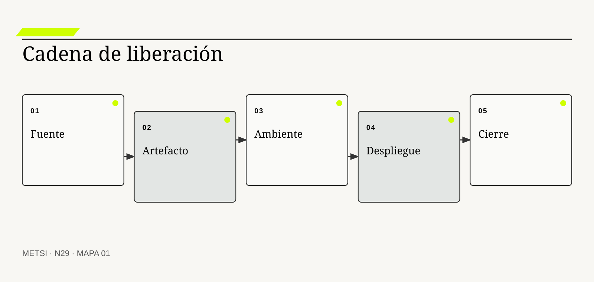
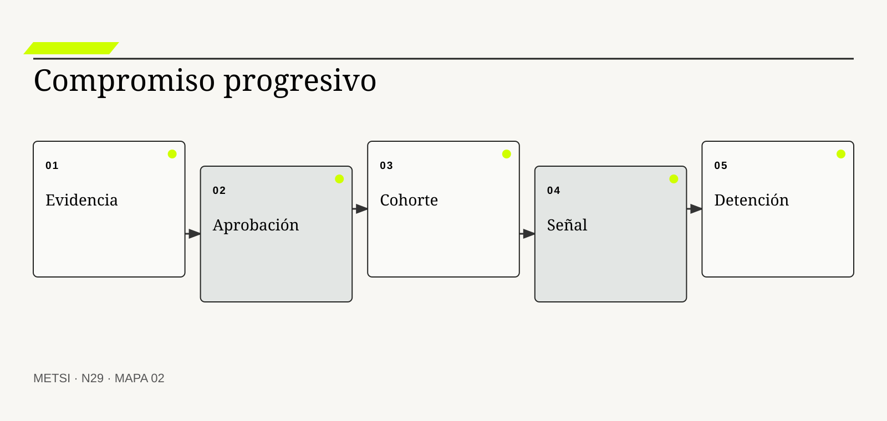
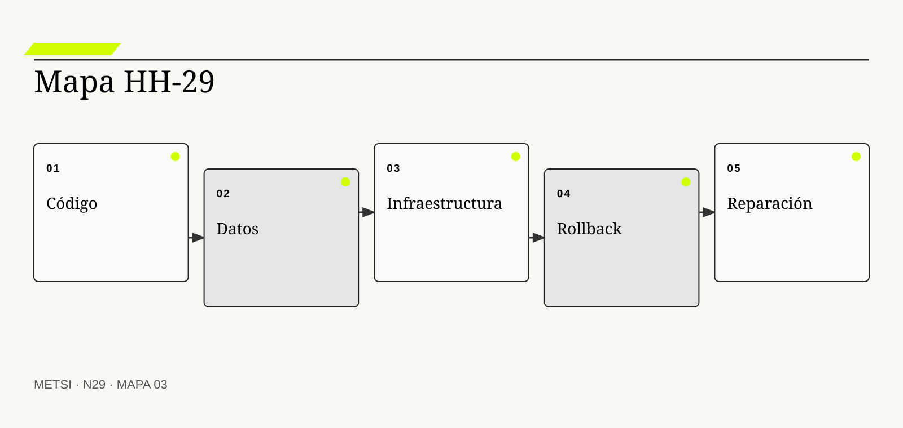

JH
Jez Humble y David Farley
Sistematizaron entrega continua y artefactos liberables.

N29 gobierna integración, despliegue, infraestructura, aprobación y rollback como una cadena de compromiso trazable, progresiva y reparable.
Gobierno de integración, despliegue, infraestructura, aprobación y rollback
Ruta de lectura: problema, distinciones, decisiones, prueba, transferencia y preparación.
Nota. SIN NUM. identifica aparatos de orientación y referencia.
Seis voces para ampliar, contrastar y discutir N29.
Sistematizaron entrega continua y artefactos liberables.
Relacionan desempeño de entrega, estabilidad y prácticas organizacionales.

Integra desarrollo seguro y cadena de suministro.
Define niveles y attestations de procedencia de software.
Promueve seguridad incorporada al diseño y al proveedor.
Vincula seguridad y gestión del servicio con control operativo.
N29 no resume estas fuentes ni las convierte en receta. Las pone en tensión para construir juicio profesional.
¿Cómo liberar cambios con velocidad responsable cuando código, configuración, infraestructura, datos y autoridad deben avanzar juntos y poder recuperarse?

N29 gobierna integración, despliegue, infraestructura, aprobación y rollback como una cadena de compromiso trazable, progresiva y reparable.
Hotel Horizonte despliega una nueva versión del circuito de ingreso durante una tarde de baja demanda. La aplicación puede volver a la versión anterior, pero la migración ya transformó estados de reserva y el proveedor de cerraduras actualizó una regla incompatible. El botón de rollback revierte código y deja la operación partida.
La aprobación había revisado alcance y pruebas funcionales. No había verificado procedencia del artefacto, compatibilidad de datos, configuración, infraestructura, terceros, observabilidad ni autoridad para interrumpir. El despliegue era técnicamente automatizado y organizacionalmente incompleto.
Gobernar una liberación significa coordinar una decisión reversible o reparable a través de toda la cadena. Incluye integración continua, artefactos trazables, ambientes, infraestructura como código, pruebas, segregación, despliegue progresivo, monitoreo y planes de recuperación.
El equipo reconstruye la versión liberada desde su origen. Declara qué cambia, qué evidencia habilita cada puerta, quién aprueba según riesgo, qué población se expone y cómo se recuperan código, datos, configuración y operación.
La velocidad deja de medirse por frecuencia aislada. Importa cuánto compromiso puede asumirse sin perder capacidad de observar, detener, corregir y aprender.
N29 recibe de HH-28 reclamos de calidad y los convierte en decisiones de liberación. El objetivo no es agregar burocracia, sino ubicar control donde reduce incertidumbre y daño.
HH-29 organiza una liberación progresiva del circuito de ingreso. El expediente vincula cambio, artefacto, procedencia, ambientes, datos, infraestructura, pruebas, aprobación, exposición, señales y recuperación. Un ensayo descubre que volver código no restaura estados; el plan cambia antes de ampliar el despliegue.
N29 gobierna integración, despliegue, infraestructura, aprobación y rollback como una cadena de compromiso trazable, progresiva y reparable.
N28 deja evidencia y decisiones abiertas que N29 utiliza sin reabrir su contenido. N29 gobierna integración, despliegue, infraestructura, aprobación y rollback como una cadena de compromiso trazable, progresiva y reparable.
N30 observará la promesa ya operativa mediante señales técnicas, de negocio y de experiencia, y organizará incidentes y aprendizaje. N29 no diseña todavía el sistema completo de observabilidad.
Humble, J. y Farley, D. organizan artefactos liberables, automatización y recuperación. En N29, ese aporte pone a prueba decisiones concretas y no funciona como respaldo ornamental. Su alcance se conserva en N29: ninguna referencia sustituye la evidencia del caso ni la autoridad necesaria para intervenir.
Forsgren, N., Humble, J. y Kim, G. relacionan desempeño de entrega con estabilidad y aprendizaje. En N29, ese aporte pone a prueba decisiones concretas y no funciona como respaldo ornamental. Su alcance se conserva en N29: ninguna referencia sustituye la evidencia del caso ni la autoridad necesaria para intervenir.
Google Cloud relaciona desempeño de entrega con estabilidad y aprendizaje. En N29, ese aporte pone a prueba decisiones concretas y no funciona como respaldo ornamental. Su alcance se conserva en N29: ninguna referencia sustituye la evidencia del caso ni la autoridad necesaria para intervenir.
NIST integra prácticas de desarrollo seguro al ciclo de vida. En N29, ese aporte pone a prueba decisiones concretas y no funciona como respaldo ornamental. Su alcance se conserva en N29: ninguna referencia sustituye la evidencia del caso ni la autoridad necesaria para intervenir.
NIST integra riesgo de cadena de suministro durante el ciclo de vida. En N29, ese aporte pone a prueba decisiones concretas y no funciona como respaldo ornamental. Su alcance se conserva en N29: ninguna referencia sustituye la evidencia del caso ni la autoridad necesaria para intervenir.
NIST integra seguridad de cadena de suministro en pipelines. En N29, ese aporte pone a prueba decisiones concretas y no funciona como respaldo ornamental. Su alcance se conserva en N29: ninguna referencia sustituye la evidencia del caso ni la autoridad necesaria para intervenir.
SLSA define niveles y attestations de procedencia de software. En N29, ese aporte pone a prueba decisiones concretas y no funciona como respaldo ornamental. Su alcance se conserva en N29: ninguna referencia sustituye la evidencia del caso ni la autoridad necesaria para intervenir.
CISA desplaza seguridad hacia decisiones de producto y proveedor. En N29, ese aporte pone a prueba decisiones concretas y no funciona como respaldo ornamental. Su alcance se conserva en N29: ninguna referencia sustituye la evidencia del caso ni la autoridad necesaria para intervenir.
ISO/IEC estructura un sistema de gestión de seguridad de la información. En N29, ese aporte pone a prueba decisiones concretas y no funciona como respaldo ornamental. Su alcance se conserva en N29: ninguna referencia sustituye la evidencia del caso ni la autoridad necesaria para intervenir.
ISO/IEC establece requisitos de gestión para sostener servicios. En N29, ese aporte pone a prueba decisiones concretas y no funciona como respaldo ornamental. Su alcance se conserva en N29: ninguna referencia sustituye la evidencia del caso ni la autoridad necesaria para intervenir.
OpenGitOps formula operación declarativa, versionada y reconciliada. En N29, ese aporte pone a prueba decisiones concretas y no funciona como respaldo ornamental. Su alcance se conserva en N29: ninguna referencia sustituye la evidencia del caso ni la autoridad necesaria para intervenir.
Kim, G., Humble, J., Debois, P. y Willis, J. integran flujo, retroalimentación y aprendizaje organizacional. En N29, ese aporte pone a prueba decisiones concretas y no funciona como respaldo ornamental. Su alcance se conserva en N29: ninguna referencia sustituye la evidencia del caso ni la autoridad necesaria para intervenir.

Integración continua mantiene cambios pequeños combinados y verificados con frecuencia sobre una base compartida. La definición fija el objeto de decisión. Si el equipo de N29 no puede expresar qué compromiso organiza, la categoría funciona como etiqueta y no como instrumento.
No es ejecutar una herramienta ni fusionar sin disciplina. La distinción evita que una palabra familiar oculte otro mecanismo. En N29, confundirlos cambia qué se observa, qué se acepta como avance y quién debe intervenir.
En integración continua, el recorrido causal debe mostrar qué condición habilita la acción, qué transformación ocurre y quién absorbe el resultado. Reduce distancia entre versiones y detecta incompatibilidades antes de acumularlas. Si un salto depende sólo de una explicación oral, la estrategia todavía no puede gobernarlo.
La evidencia relevante para integración continua no se limita al resultado promedio. Frecuencia, tiempo de reparación y fallas de integración muestran su eficacia. N29 busca además casos negativos, diferencias entre poblaciones y señales de que la explicación elegida podría ser insuficiente.
Ejemplo. El cambio de reserva se integra con pruebas de contrato y migración. En N29, el episodio vuelve visible la relación entre ritmo, autoridad, evidencia y capacidad de reparación.
El tradeoff central de integración continua aparece entre anticipar y preservar opciones. Anticipar puede reducir coordinación y también fijar una premisa prematura; preservar opciones puede producir aprendizaje y también demorar una protección necesaria. La elección debe declarar cuál de esos costos acepta, durante cuánto tiempo y para quién.
La auditoría de integración continua termina con una pregunta de uso: ¿qué podría decidir ahora una persona que antes no podía? En N29, la respuesta debe nombrar una acción, una restricción y una evidencia, no sólo una comprensión mejorada.
Operacionalizar integración continua requiere asignar una unidad observable. El equipo define qué episodio contará, desde qué momento, con qué población y bajo qué fuente. Después compara al menos un caso ordinario con otro que fuerce excepción. Esta precisión en N29 evita que una conclusión general se sostenga sólo en ejemplos convenientes.
La decisión profesional no termina en adoptar integración continua. Se compara una ruta principal con una explicación rival, se explicita quién queda expuesto y se conserva un modo de revisar. Una base verde puede ocultar escenarios no automatizados. El límite forma parte del diseño y no una nota posterior.
Un artefacto liberable es una unidad identificada, inmutable y trazable que puede promoverse entre ambientes. Conviene comenzar por su función profesional. Si el equipo de N29 no puede expresar qué compromiso organiza, la categoría funciona como etiqueta y no como instrumento.
No es cualquier compilación ni una copia reconstruida para producción. El contraste importa porque conduce a pruebas distintas. En N29, confundirlos cambia qué se observa, qué se acepta como avance y quién debe intervenir.
El mecanismo de artefacto liberable no se presume por el nombre. Conserva versión, dependencias, procedencia, firmas y evidencia asociada. Debe localizarse dónde comienza, qué relaciones activa, qué demora introduce y qué capacidad de reparación queda disponible cuando la expectativa no se cumple.
Una afirmación sobre artefacto liberable gana fuerza cuando puede reconstruirse desde fuentes independientes. Verificación reproducible y attestations permiten rastrear origen. La ausencia de señal también se interpreta: puede significar estabilidad, mala observación o exclusión del caso que más importa.
Ejemplo. La misma imagen probada se promueve al despliegue. En N29, el episodio vuelve visible la relación entre ritmo, autoridad, evidencia y capacidad de reparación.
La escala modifica artefacto liberable. Una solución válida para un equipo puede fallar cuando atraviesa sedes, turnos o proveedores porque aumenta la distancia entre señal y autoridad. Antes de ampliar, N29 prueba si la misma decisión conserva significado y reparación bajo esa nueva distribución.
Para evitar consenso aparente, artefacto liberable se revisa con alguien afectado y con alguien responsable de reparar. Las dos perspectivas pueden valorar resultados diferentes y obligan a declarar la prioridad elegida.
En la práctica, artefacto liberable atraviesa más de un área. Se identifican handoffs, esperas, decisiones y datos que cada participante puede ver. Cuando dos áreas usan evidencia distinta en N29, el expediente conserva la divergencia hasta determinar si representa error, perspectiva legítima o una brecha que la estrategia debe resolver.
En una revisión, artefacto liberable debe responder tres preguntas: qué mejora, qué desplaza y qué vuelve más difícil de revertir. La trazabilidad no garantiza que el contenido sea adecuado. Si esas respuestas cambian, también debe cambiar el compromiso, aunque el trabajo previo haya sido técnicamente correcto.
Ambiente y configuración reúnen condiciones externas que determinan el comportamiento de una versión. El concepto adquiere valor cuando cambia una decisión. Si el equipo de N29 no puede expresar qué compromiso organiza, la categoría funciona como etiqueta y no como instrumento.
No son detalles posteriores al código. Su vecino conceptual puede parecer equivalente y no lo es. En N29, confundirlos cambia qué se observa, qué se acepta como avance y quién debe intervenir.
Comprender ambiente y configuración exige seguir la decisión en el tiempo. Versionado, paridad relevante y gestión segura reducen diferencias invisibles. El análisis distingue condición, intervención, señal temprana y consecuencia para evitar atribuir a una práctica un efecto producido por otro cambio simultáneo.
La prueba de ambiente y configuración debe formularse antes de conocer el resultado. Inventarios, comparaciones y pruebas en condiciones reales revelan deriva. Se registra qué observación sostendría continuar, cuál obligaría a adaptar y cuál activaría detención o escalamiento.
Ejemplo. Reglas de cerradura y secretos se controlan junto con la aplicación. En N29, el episodio vuelve visible la relación entre ritmo, autoridad, evidencia y capacidad de reparación.
El tiempo también altera ambiente y configuración. Una evidencia suficiente para explorar puede ser insuficiente para operar de forma permanente. Por eso se separan prueba local, compromiso transitorio y condición estable, y cada estado conserva fecha, alcance y responsable de revisión.
El registro de ambiente y configuración conserva una explicación rival. Si esa alternativa predice mejor el episodio siguiente, el equipo cambia de curso sin reescribir retrospectivamente lo que creía saber.
La gobernanza de ambiente y configuración incluye quién puede proponer, aprobar, ejecutar, observar y reparar. Esas funciones no se presumen por cargo ni por permiso técnico. N29 las prueba en un escenario donde falta la persona habitual, porque una capacidad que sólo funciona con conocimiento privado todavía no pertenece a la organización.
El juicio sobre ambiente y configuración incluye distribución de consecuencias. La producción nunca puede replicarse por completo en prueba. Una mejora agregada no alcanza si concentra espera, riesgo o trabajo invisible en un grupo sin autoridad para discutir la decisión.
Infraestructura como código expresa recursos y políticas mediante definiciones versionadas y revisables. La definición fija el objeto de decisión. Si el equipo de N29 no puede expresar qué compromiso organiza, la categoría funciona como etiqueta y no como instrumento.
No significa automatizar cualquier cambio sin control. La distinción evita que una palabra familiar oculte otro mecanismo. En N29, confundirlos cambia qué se observa, qué se acepta como avance y quién debe intervenir.
La explicación operacional de infraestructura como código conecta personas, reglas y tecnología. Permite reproducibilidad, comparación, revisión y recuperación. Esa conexión permite decidir qué parte puede modificarse localmente y cuál requiere coordinación con otras autoridades o capacidades.
Para auditar infraestructura como código, conviene combinar evidencia de diseño, ejecución y consecuencia. Planes, estados, pruebas y reconstrucciones verifican la definición. Ninguna fuente domina automáticamente; una especificación correcta puede convivir con una operación dañina.
Ejemplo. Red, permisos y capacidad del ingreso quedan registrados. En N29, el episodio vuelve visible la relación entre ritmo, autoridad, evidencia y capacidad de reparación.
Existe además una dimensión política en infraestructura como código. La opción más eficiente puede reducir la capacidad de una persona para cuestionar una decisión o trasladar trabajo sin reconocerlo. N29 registra esa distribución y no la esconde dentro de un indicador agregado.
Una prueba adversa de infraestructura como código introduce demora, ausencia de autoridad o dato incompleto. El objetivo de N29 no es cubrir todas las fallas, sino revelar si la estrategia mantiene una salida segura fuera del camino ordinario.
El indicador de infraestructura como código se elige después de formular la decisión. Puede combinar tiempo, calidad, distribución y costo de reparación. Una cifra aislada rara vez explica el mecanismo. En N29, la lectura conjunta de señales evita optimizar velocidad mientras aumenta retrabajo, exclusión o dependencia.
La condición de cierre de infraestructura como código no es perfección. El estado externo y los cambios manuales pueden producir deriva. Es evidencia suficiente para el uso previsto, riesgo residual aceptado por autoridad y una ruta clara cuando el supuesto deje de cumplirse.

Una puerta de decisión vincula evidencia y autoridad con el compromiso que puede asumirse. Conviene comenzar por su función profesional. Si el equipo de N29 no puede expresar qué compromiso organiza, la categoría funciona como etiqueta y no como instrumento.
No es una reunión fija ni una firma ceremonial. El contraste importa porque conduce a pruebas distintas. En N29, confundirlos cambia qué se observa, qué se acepta como avance y quién debe intervenir.
Para que puerta de decisión sea algo más que una etiqueta, debe existir una cadena examinable. Aumenta exigencia según exposición, irreversibilidad y riesgo. La cadena incluye supuestos, handoffs y efectos laterales que una descripción ideal suele omitir.
El equipo no declara resuelto puerta de decisión por acuerdo retórico. Criterios previos y decisiones registradas permiten auditarla. Una persona ajena al diseño debe poder repetir la prueba y comprender por qué el resultado habilita una decisión concreta.
Ejemplo. Una población limitada se habilita sólo si pasan escenarios críticos. En N29, el episodio vuelve visible la relación entre ritmo, autoridad, evidencia y capacidad de reparación.
La mantenibilidad de puerta de decisión se prueba mediante cambio deliberado. Se modifica una regla, una fuente o una dependencia y se observa quién detecta el impacto, cuánto tarda en responder y qué información necesita. En N29, si la respuesta depende de memoria privada, la capacidad todavía es frágil.
El costo de puerta de decisión se observa tanto en presupuesto como en atención, espera, coordinación y dependencia. Lo que no figura en una factura puede seguir siendo el costo que define la viabilidad.
La transición asociada con puerta de decisión necesita un estado intermedio explícito. Durante ese período conviven reglas, versiones o capacidades diferentes. N29 declara cuál rige para cada población, cómo se comunica y qué contingencia protege a quien podría quedar entre ambos sistemas.
El análisis de puerta de decisión evita dos extremos: conservar por inercia y cambiar por identidad metodológica. Demasiadas puertas pueden dispersar responsabilidad y demorar reparación. Entre ambos queda una decisión provisional con fecha, responsable y prueba de revisión.
Aprobación basada en riesgo ajusta controles y autoridad al daño y a la reversibilidad del cambio. El concepto adquiere valor cuando cambia una decisión. Si el equipo de N29 no puede expresar qué compromiso organiza, la categoría funciona como etiqueta y no como instrumento.
No equivale a aprobar todo automáticamente ni a exigir comité para cada versión. Su vecino conceptual puede parecer equivalente y no lo es. En N29, confundirlos cambia qué se observa, qué se acepta como avance y quién debe intervenir.
El valor de aprobación basada en riesgo aparece al contrastar alternativas. Clasifica cambios por alcance, evidencia, dependencia y recuperación. Si dos opciones producen el mismo entregable inmediato, el mecanismo permite compararlas por aprendizaje, dependencia, riesgo residual y posibilidad de salida.
La suficiencia de evidencia para aprobación basada en riesgo depende del costo de equivocarse. Historial de fallas y calidad de controles recalibran la clasificación. A mayor irreversibilidad o desigualdad de daño, mayor contraste, supervisión y autoridad se requieren.
Ejemplo. Un texto puede fluir con control automático; una migración requiere revisión adicional. En N29, el episodio vuelve visible la relación entre ritmo, autoridad, evidencia y capacidad de reparación.
Finalmente, aprobación basada en riesgo debe convivir con otras decisiones. Optimizarla de manera aislada puede empeorar flujo, seguridad o comprensión. El expediente N29 explicita dependencias y evita que una mejora local se presente como outcome completo del sistema.
La revisión de aprobación basada en riesgo fija fecha y desencadenante. Puede ocurrir por incidente, cambio normativo, nueva población o evidencia acumulada. Sin esa regla en N29, una decisión provisional se vuelve permanente por olvido.
El cierre de aprobación basada en riesgo debe sobrevivir a una revisión independiente. La evidencia, las decisiones y los límites se almacenan de manera que otra persona pueda cuestionarlos. En N29, la trazabilidad no busca eliminar desacuerdo; busca que el desacuerdo se concentre en supuestos examinables y no en recuerdos incompatibles.
La estrategia debe poder explicar por qué aprobación basada en riesgo recibe cierta inversión y no otra. Una taxonomía rígida puede ser manipulada o quedar obsoleta. Esa explicación conecta valor, costo, aprendizaje y reparación, y permanece abierta a evidencia nueva.
Segregación de funciones distribuye capacidades sensibles para reducir abuso y error no detectado. La definición fija el objeto de decisión. Si el equipo de N29 no puede expresar qué compromiso organiza, la categoría funciona como etiqueta y no como instrumento.
No exige que cada acción pase por muchas personas. La distinción evita que una palabra familiar oculte otro mecanismo. En N29, confundirlos cambia qué se observa, qué se acepta como avance y quién debe intervenir.
En segregación de funciones, el recorrido causal debe mostrar qué condición habilita la acción, qué transformación ocurre y quién absorbe el resultado. Combina permisos, revisión, trazabilidad y controles compensatorios. Si un salto depende sólo de una explicación oral, la estrategia todavía no puede gobernarlo.
La evidencia relevante para segregación de funciones no se limita al resultado promedio. Registros de acceso y ejercicios muestran si la separación es efectiva. N29 busca además casos negativos, diferencias entre poblaciones y señales de que la explicación elegida podría ser insuficiente.
Ejemplo. Quien desarrolla no puede borrar sin rastro la evidencia de producción. En N29, el episodio vuelve visible la relación entre ritmo, autoridad, evidencia y capacidad de reparación.
El tradeoff central de segregación de funciones aparece entre anticipar y preservar opciones. Anticipar puede reducir coordinación y también fijar una premisa prematura; preservar opciones puede producir aprendizaje y también demorar una protección necesaria. La elección debe declarar cuál de esos costos acepta, durante cuánto tiempo y para quién.
La auditoría de segregación de funciones termina con una pregunta de uso: ¿qué podría decidir ahora una persona que antes no podía? En N29, la respuesta debe nombrar una acción, una restricción y una evidencia, no sólo una comprensión mejorada.
Operacionalizar segregación de funciones requiere asignar una unidad observable. El equipo define qué episodio contará, desde qué momento, con qué población y bajo qué fuente. Después compara al menos un caso ordinario con otro que fuerce excepción. Esta precisión en N29 evita que una conclusión general se sostenga sólo en ejemplos convenientes.
La decisión profesional no termina en adoptar segregación de funciones. Se compara una ruta principal con una explicación rival, se explicita quién queda expuesto y se conserva un modo de revisar. Equipos pequeños necesitan diseños proporcionales que no bloqueen respuesta. El límite forma parte del diseño y no una nota posterior.
Despliegue progresivo amplía exposición por etapas mientras observa evidencia y conserva salida. Conviene comenzar por su función profesional. Si el equipo de N29 no puede expresar qué compromiso organiza, la categoría funciona como etiqueta y no como instrumento.
No es liberar lentamente sin criterio. El contraste importa porque conduce a pruebas distintas. En N29, confundirlos cambia qué se observa, qué se acepta como avance y quién debe intervenir.
El mecanismo de despliegue progresivo no se presume por el nombre. Utiliza cohortes, feature flags, canarios y umbrales previos. Debe localizarse dónde comienza, qué relaciones activa, qué demora introduce y qué capacidad de reparación queda disponible cuando la expectativa no se cumple.
Una afirmación sobre despliegue progresivo gana fuerza cuando puede reconstruirse desde fuentes independientes. Comparación de señales y detención automática limitan impacto. La ausencia de señal también se interpreta: puede significar estabilidad, mala observación o exclusión del caso que más importa.
Ejemplo. El nuevo ingreso comienza en un turno y una categoría controlados. En N29, el episodio vuelve visible la relación entre ritmo, autoridad, evidencia y capacidad de reparación.
La escala modifica despliegue progresivo. Una solución válida para un equipo puede fallar cuando atraviesa sedes, turnos o proveedores porque aumenta la distancia entre señal y autoridad. Antes de ampliar, N29 prueba si la misma decisión conserva significado y reparación bajo esa nueva distribución.
Para evitar consenso aparente, despliegue progresivo se revisa con alguien afectado y con alguien responsable de reparar. Las dos perspectivas pueden valorar resultados diferentes y obligan a declarar la prioridad elegida.
En la práctica, despliegue progresivo atraviesa más de un área. Se identifican handoffs, esperas, decisiones y datos que cada participante puede ver. Cuando dos áreas usan evidencia distinta en N29, el expediente conserva la divergencia hasta determinar si representa error, perspectiva legítima o una brecha que la estrategia debe resolver.
En una revisión, despliegue progresivo debe responder tres preguntas: qué mejora, qué desplaza y qué vuelve más difícil de revertir. Una muestra pequeña puede no representar picos ni poblaciones críticas. Si esas respuestas cambian, también debe cambiar el compromiso, aunque el trabajo previo haya sido técnicamente correcto.

Rollback restaura una versión o estado anterior cuando la reversión es segura y completa. El concepto adquiere valor cuando cambia una decisión. Si el equipo de N29 no puede expresar qué compromiso organiza, la categoría funciona como etiqueta y no como instrumento.
No es un botón universal ni sinónimo de recuperación. Su vecino conceptual puede parecer equivalente y no lo es. En N29, confundirlos cambia qué se observa, qué se acepta como avance y quién debe intervenir.
Comprender rollback exige seguir la decisión en el tiempo. Debe abarcar código, configuración, datos, infraestructura y contratos relevantes. El análisis distingue condición, intervención, señal temprana y consecuencia para evitar atribuir a una práctica un efecto producido por otro cambio simultáneo.
La prueba de rollback debe formularse antes de conocer el resultado. Ensayos y tiempos medidos prueban la capacidad real. Se registra qué observación sostendría continuar, cuál obligaría a adaptar y cuál activaría detención o escalamiento.
Ejemplo. La versión anterior vuelve junto con reglas compatibles. En N29, el episodio vuelve visible la relación entre ritmo, autoridad, evidencia y capacidad de reparación.
El tiempo también altera rollback. Una evidencia suficiente para explorar puede ser insuficiente para operar de forma permanente. Por eso se separan prueba local, compromiso transitorio y condición estable, y cada estado conserva fecha, alcance y responsable de revisión.
El registro de rollback conserva una explicación rival. Si esa alternativa predice mejor el episodio siguiente, el equipo cambia de curso sin reescribir retrospectivamente lo que creía saber.
La gobernanza de rollback incluye quién puede proponer, aprobar, ejecutar, observar y reparar. Esas funciones no se presumen por cargo ni por permiso técnico. N29 las prueba en un escenario donde falta la persona habitual, porque una capacidad que sólo funciona con conocimiento privado todavía no pertenece a la organización.
El juicio sobre rollback incluye distribución de consecuencias. Migraciones destructivas y efectos externos pueden impedirlo. Una mejora agregada no alcanza si concentra espera, riesgo o trabajo invisible en un grupo sin autoridad para discutir la decisión.
Rollforward y reparación corrigen hacia adelante cuando volver no restaura la promesa. La definición fija el objeto de decisión. Si el equipo de N29 no puede expresar qué compromiso organiza, la categoría funciona como etiqueta y no como instrumento.
No es improvisar bajo presión ni negar la necesidad de contingencia. La distinción evita que una palabra familiar oculte otro mecanismo. En N29, confundirlos cambia qué se observa, qué se acepta como avance y quién debe intervenir.
La explicación operacional de rollforward y reparación conecta personas, reglas y tecnología. Prepara cambios compensatorios, reconciliación y comunicación. Esa conexión permite decidir qué parte puede modificarse localmente y cuál requiere coordinación con otras autoridades o capacidades.
Para auditar rollforward y reparación, conviene combinar evidencia de diseño, ejecución y consecuencia. Ejercicios y runbooks contrastados reducen dependencia de héroes. Ninguna fuente domina automáticamente; una especificación correcta puede convivir con una operación dañina.
Ejemplo. El hotel repara estados migrados y mantiene una vía manual segura. En N29, el episodio vuelve visible la relación entre ritmo, autoridad, evidencia y capacidad de reparación.
Existe además una dimensión política en rollforward y reparación. La opción más eficiente puede reducir la capacidad de una persona para cuestionar una decisión o trasladar trabajo sin reconocerlo. N29 registra esa distribución y no la esconde dentro de un indicador agregado.
Una prueba adversa de rollforward y reparación introduce demora, ausencia de autoridad o dato incompleto. El objetivo de N29 no es cubrir todas las fallas, sino revelar si la estrategia mantiene una salida segura fuera del camino ordinario.
El indicador de rollforward y reparación se elige después de formular la decisión. Puede combinar tiempo, calidad, distribución y costo de reparación. Una cifra aislada rara vez explica el mecanismo. En N29, la lectura conjunta de señales evita optimizar velocidad mientras aumenta retrabajo, exclusión o dependencia.
La condición de cierre de rollforward y reparación no es perfección. Corregir hacia adelante puede aumentar exposición si el diagnóstico es incierto. Es evidencia suficiente para el uso previsto, riesgo residual aceptado por autoridad y una ruta clara cuando el supuesto deje de cumplirse.
Procedencia y cadena de suministro permiten conocer origen, transformación y controles de componentes y artefactos. Conviene comenzar por su función profesional. Si el equipo de N29 no puede expresar qué compromiso organiza, la categoría funciona como etiqueta y no como instrumento.
No se resuelven con un inventario estático de paquetes. El contraste importa porque conduce a pruebas distintas. En N29, confundirlos cambia qué se observa, qué se acepta como avance y quién debe intervenir.
Para que procedencia y cadena de suministro sea algo más que una etiqueta, debe existir una cadena examinable. Firmas, SBOM, attestations y políticas conectan fuente, build y despliegue. La cadena incluye supuestos, handoffs y efectos laterales que una descripción ideal suele omitir.
El equipo no declara resuelto procedencia y cadena de suministro por acuerdo retórico. Verificación independiente y monitoreo de vulnerabilidades sostienen confianza. Una persona ajena al diseño debe poder repetir la prueba y comprender por qué el resultado habilita una decisión concreta.
Ejemplo. El artefacto del PMS puede rastrearse hasta fuente y plataforma de build. En N29, el episodio vuelve visible la relación entre ritmo, autoridad, evidencia y capacidad de reparación.
La mantenibilidad de procedencia y cadena de suministro se prueba mediante cambio deliberado. Se modifica una regla, una fuente o una dependencia y se observa quién detecta el impacto, cuánto tarda en responder y qué información necesita. En N29, si la respuesta depende de memoria privada, la capacidad todavía es frágil.
El costo de procedencia y cadena de suministro se observa tanto en presupuesto como en atención, espera, coordinación y dependencia. Lo que no figura en una factura puede seguir siendo el costo que define la viabilidad.
La transición asociada con procedencia y cadena de suministro necesita un estado intermedio explícito. Durante ese período conviven reglas, versiones o capacidades diferentes. N29 declara cuál rige para cada población, cómo se comunica y qué contingencia protege a quien podría quedar entre ambos sistemas.
El análisis de procedencia y cadena de suministro evita dos extremos: conservar por inercia y cambiar por identidad metodológica. Procedencia válida no demuestra ausencia de vulnerabilidades. Entre ambos queda una decisión provisional con fecha, responsable y prueba de revisión.
Cierre de liberación confirma que el cambio quedó operable, observado, documentado y transferido. El concepto adquiere valor cuando cambia una decisión. Si el equipo de N29 no puede expresar qué compromiso organiza, la categoría funciona como etiqueta y no como instrumento.
No coincide con terminar el pipeline ni alcanzar cien por ciento de tráfico. Su vecino conceptual puede parecer equivalente y no lo es. En N29, confundirlos cambia qué se observa, qué se acepta como avance y quién debe intervenir.
El valor de cierre de liberación aparece al contrastar alternativas. Revisa resultados, excepciones, ownership, deuda y próximos umbrales. Si dos opciones producen el mismo entregable inmediato, el mecanismo permite compararlas por aprendizaje, dependencia, riesgo residual y posibilidad de salida.
La suficiencia de evidencia para cierre de liberación depende del costo de equivocarse. Evidencia de producción y aceptación operativa permiten cerrar. A mayor irreversibilidad o desigualdad de daño, mayor contraste, supervisión y autoridad se requieren.
Ejemplo. Recepción confirma capacidad y conoce contingencia antes de retirar soporte reforzado. En N29, el episodio vuelve visible la relación entre ritmo, autoridad, evidencia y capacidad de reparación.
Finalmente, cierre de liberación debe convivir con otras decisiones. Optimizarla de manera aislada puede empeorar flujo, seguridad o comprensión. El expediente N29 explicita dependencias y evita que una mejora local se presente como outcome completo del sistema.
La revisión de cierre de liberación fija fecha y desencadenante. Puede ocurrir por incidente, cambio normativo, nueva población o evidencia acumulada. Sin esa regla en N29, una decisión provisional se vuelve permanente por olvido.
El cierre de cierre de liberación debe sobrevivir a una revisión independiente. La evidencia, las decisiones y los límites se almacenan de manera que otra persona pueda cuestionarlos. En N29, la trazabilidad no busca eliminar desacuerdo; busca que el desacuerdo se concentre en supuestos examinables y no en recuerdos incompatibles.
La estrategia debe poder explicar por qué cierre de liberación recibe cierta inversión y no otra. Cerrar demasiado pronto borra señales; sostener modo especial indefinido crea dependencia. Esa explicación conecta valor, costo, aprendizaje y reparación, y permanece abierta a evidencia nueva.
El instrumento organiza una decisión concreta y no una descripción total. Cada campo debe completarse con evidencia disponible, incertidumbre explícita y autoridad identificada. Si un campo todavía no puede responderse, se registra como asunto abierto y no se completa por inferencia.
El expediente se prueba con un escenario ordinario y uno adverso. Una persona que no participó en su construcción debe poder reconstruir qué se decidió, por qué, qué permanece incierto y cuál es la próxima puerta. El cierre no exige certeza total; exige incertidumbre gobernada y una salida practicable.
Un banco cambia una regla de liquidación que combina aplicación, datos, mensajería y proveedor externo. Volver una versión no revierte transferencias ya emitidas.
La liberación usa exposición progresiva, reconciliación, autorización proporcional y rollforward preparado. El plan distingue restaurar software de reparar consecuencias.
HH-29 convierte el despliegue en una decisión sobre compromiso y no en un evento técnico.
Una organización automatiza build, pruebas y despliegue y considera gobernada la entrega.
El pipeline no conoce cambios manuales, datos irreversibles, autoridad ni capacidad del turno. La velocidad aumenta y la reparación depende de improvisación.
La automatización es control sólo cuando representa la promesa y sus riesgos.
La prueba integral de gobierno de integración, despliegue, infraestructura, aprobación y rollback toma una decisión real y la recorre desde su origen hasta una consecuencia observable. Utiliza cambio y alcance, artefacto y procedencia, ambientes, configuración para evitar que el análisis quede dividido en artefactos independientes. Cada afirmación debe encontrar una fuente, una autoridad y una condición de revisión. Cuando dos registros no coinciden, la diferencia se conserva como hallazgo hasta explicar su mecanismo.
El escenario ordinario verifica que n29 gobierna integración, despliegue, infraestructura, aprobación y rollback como una cadena de compromiso trazable, progresiva y reparable. El escenario adverso modifica una dependencia, introduce demora y deja ausente a la persona que suele resolver. El equipo observa si la estrategia detecta el cambio, limita el daño, comunica incertidumbre y activa reparación sin recurrir a conocimiento privado.
La comparación incluye una alternativa descartada. Se documenta por qué no fue elegida, qué supuesto la volvería preferible y qué costo tendría recuperarla. Este ejercicio protege opciones futuras y evita presentar la decisión actual como única solución técnicamente posible. También vuelve discutibles los costos hundidos cuando aparece evidencia nueva.
La prueba concluye con una defensa breve ante una audiencia ajena al equipo. Esa audiencia debe poder reconstruir el problema, objetar la evidencia y comprender por qué la salida propuesta es proporcional. Si sólo puede repetir la recomendación, el expediente todavía no sostiene una decisión profesional. Si puede reconocer límites y actuar ante una excepción, existe capacidad transferible.
Confundir despliegue con liberación simplifica una decisión que depende de propósito, evidencia y consecuencia. La velocidad inicial se paga cuando operación descubre el supuesto omitido. La corrección vuelve al episodio, identifica quién absorbe el costo y define una prueba antes de continuar.
Reconstruir artefactos parece reducir coordinación, pero confunde acuerdo con conocimiento suficiente. El equipo debe comparar una explicación rival, localizar autoridad y registrar qué señal cambiaría el curso elegido.
Ignorar configuración desplaza incertidumbre hacia personas que no participaron de la elección. Corregirlo exige reconstruir el mecanismo, hacer visible el trabajo añadido y establecer una condición de salida proporcional al daño posible.
Aprobar por calendario convierte una práctica en fin. La revisión pregunta qué función debía cumplir, qué evidencia produjo y por qué sigue siendo necesaria. Si la función desapareció, la práctica se adapta o se retira.
Automatizar sin autoridad oculta una frontera. El artefacto puede cerrar y la capacidad seguir incompleta. Un escenario adverso permite observar handoffs, excepciones y reparación antes de ampliar compromiso.
Desplegar a todos de una vez confunde cumplimiento formal con decisión defendible. Se necesita conectar fuente, interpretación, implementación y efecto, incluyendo la autoridad que acepta el riesgo residual.
Prometer rollback incompleto suele premiar lo visible y dejar fuera mantenimiento, soporte y aprendizaje. La corrección compara el ciclo completo, documenta dependencia y ensaya una salida real.
Olvidar datos y terceros reduce diversidad de casos a un promedio conveniente. Se revisan poblaciones, extremos y daños asimétricos para evitar que una mejora global silencie una pérdida crítica.
Confiar sólo en el pipeline borra memoria y vuelve inexplicable el cambio de rumbo. Una baseline y un registro breve permiten conservar razones sin inmovilizar la estrategia.
Cerrar sin operación deja responsabilidad sin capacidad. El diseño debe unir permiso, recursos, evidencia y posibilidad de reparar; nombrar un dueño no crea por sí mismo una función operativa.
N29 gobierna integración, despliegue, infraestructura, aprobación y rollback como una cadena de compromiso trazable, progresiva y reparable. El avance profesional consiste en sostener una promesa bajo condiciones reales, con autoridad, evidencia y reparación, no en declarar que la solución quedó disponible.

Ninguna arquitectura, contrato, prueba, control ni tablero elimina el juicio situado.
Ninguna arquitectura, contrato, prueba, control ni tablero elimina el juicio situado. Las dependencias cambian, la evidencia llega con demora, la operación distribuye poder y una mejora local puede desplazar daño. El expediente debe conservar población afectada, supuestos, autoridad, degradación aceptable, reparación y fecha de revisión.
N30 observará la promesa ya operativa mediante señales técnicas, de negocio y de experiencia, y organizará incidentes y aprendizaje. N29 no diseña todavía el sistema completo de observabilidad.
N29 gobierna integración, despliegue, infraestructura, aprobación y rollback como una cadena de compromiso trazable, progresiva y reparable.
El bloque no propone reemplazar una doctrina por otra. Propone hacer visibles las decisiones que cada práctica organiza, la evidencia que necesita y los daños que puede producir. El resultado es una intervención que puede explicarse, probarse y revisarse.
Integración continua: integración continua mantiene cambios pequeños combinados y verificados con frecuencia sobre una base compartida.
Artefacto liberable: un artefacto liberable es una unidad identificada, inmutable y trazable que puede promoverse entre ambientes.
Ambiente y configuración: ambiente y configuración reúnen condiciones externas que determinan el comportamiento de una versión.
Infraestructura como código: infraestructura como código expresa recursos y políticas mediante definiciones versionadas y revisables.
Puerta de decisión: una puerta de decisión vincula evidencia y autoridad con el compromiso que puede asumirse.
Aprobación basada en riesgo: aprobación basada en riesgo ajusta controles y autoridad al daño y a la reversibilidad del cambio.
Segregación de funciones: segregación de funciones distribuye capacidades sensibles para reducir abuso y error no detectado.
Despliegue progresivo: despliegue progresivo amplía exposición por etapas mientras observa evidencia y conserva salida.
Rollback: rollback restaura una versión o estado anterior cuando la reversión es segura y completa.
Rollforward y reparación: rollforward y reparación corrigen hacia adelante cuando volver no restaura la promesa.
Procedencia y cadena de suministro: procedencia y cadena de suministro permiten conocer origen, transformación y controles de componentes y artefactos.
Cierre de liberación: cierre de liberación confirma que el cambio quedó operable, observado, documentado y transferido.
Para el encuentro, seleccionar una intervención conocida, completar el instrumento con evidencia verificable y preparar una decisión provisional. Incluir una explicación rival, una condición que obligaría a revisar y una consecuencia para una persona afectada.